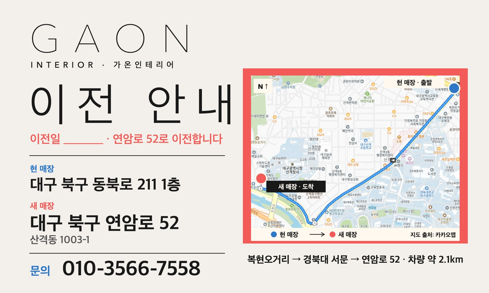
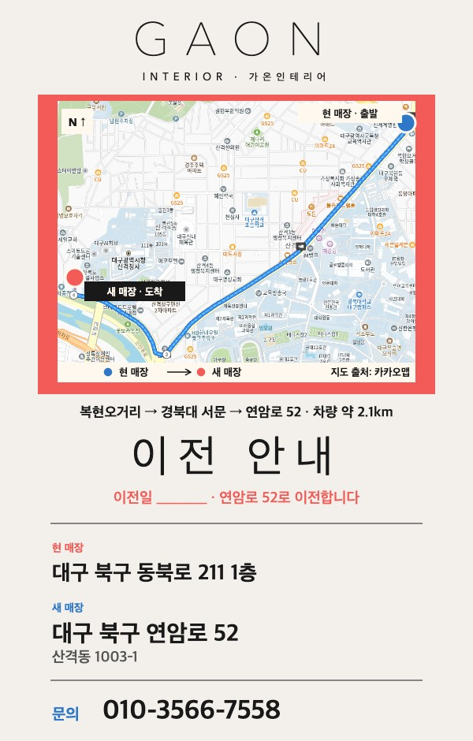
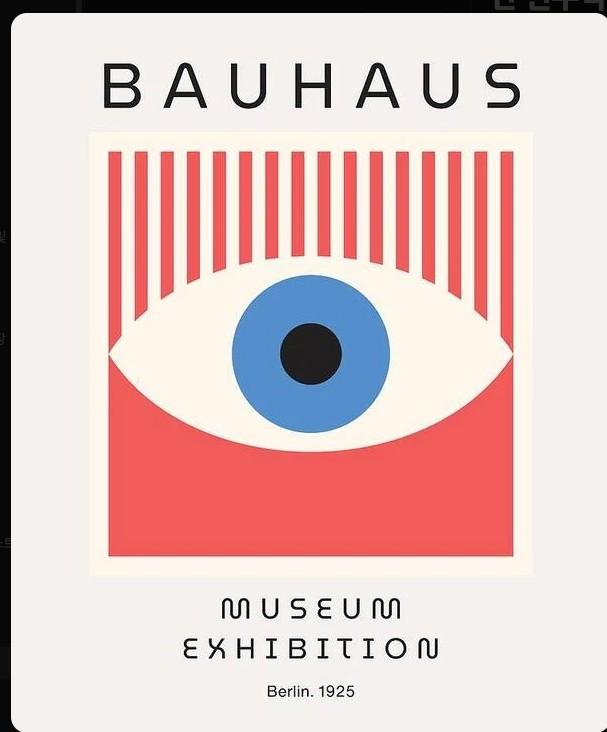
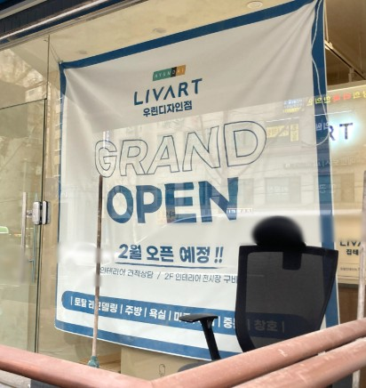

왼쪽 로고·이전 안내·주소·문의, 오른쪽 지도·경로. 이전일 빈칸. 지도 원본 해상도가 낮아(820px) 인쇄 전 고해상도로 교체 필요.

평가 루프 v11~v19 중 최고점. 크림 배경, 빨간 지도 틀, 가는 GAON 대문자, 가는 선 한글 "이전 안내".

기준작: Murellos Design (2025) — 구도·글꼴·색면 비율만 따르고 눈 그림 같은 요소는 뺌.

형식 참고: LIVART 우리디자인점 유리창 현수막 — 유리창에 거는 세로 현수막 형식.
독일·스위스 중심 100 Beste Plakate, Weltformat, Graphis, 미술관 소장작. 국가·출처 필터, 체크 선택 가능.
레퍼런스 보드 열기 →